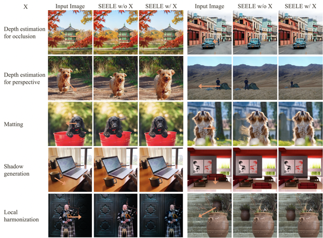

Repositioning The Subject Within Image
[arxiv][dataset] [bib]
ss
Introduction

i) Subject removal: Fill the void created when moving the subject to maintain consistency and avoid generating new, random subjects.
ii) Subject completion: Completing the occluded portions of the moved subject is necessary.
iii) Subject harmonization: The appearance of repositioned subject should blend with the surrounding areas.
Framework

SEELE employs an interactive pre-processing, manipulation, and post-processing pipeline for subject repositioning. During the pre-processing phase, SEELE identifies the subject using the segmentation model, guided by user-provided conditions, and maintains the occlusion relationships between subjects intact. In the manipulation stage, SEELE manipulates the image to fill in any left gaps. Furthermore, SEELE rectifies the obscured subject with user-specified incomplete masks. In the post-processing phase, SEELE addresses any disparities between the repositioned subject and its new surroundings.
Results
We present results of SEELE on 1024 x 1024 images.

We also assess the effectiveness of various components within SEELE during both pre-processing and post-processing phases.
